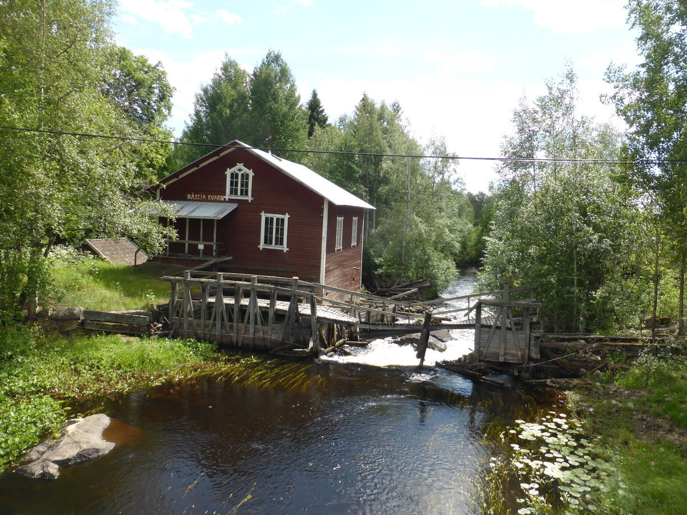

Schotterpisten und Midsommar
Tag 26
Falun - Källsjön 71 km
Sveden,Sweden
Nun da ich mich mit einem Satz Beinlinge gegen die Kälte gerüstet hatte schien natürlich den ganzen Tag die Sonne. Somit konnte ich aber auch endlich wieder die Akkus mit der Solarzelle laden.
 Ab der Grenze zu Gävleborgs Län war dann Schluss mit Asphalt, da dieser hier anscheinend erneuert werden sollte. Schotterstraßen sind normalerweise kein Problem, wenn diese bereits so oft befahren wurden, dass in der Mitte eine einigermaßen Ebene Spur gebildet wurde und die dicken Brocken alle am Rand liegen. Dies war hier nicht der Fall, sodass ich auf eine kleinere, asphaltierte Straße ausweichen musste. Diese führe mich am Ende auch nach Källsjön, wo ich dann zum Badeplatz fand.
Ab der Grenze zu Gävleborgs Län war dann Schluss mit Asphalt, da dieser hier anscheinend erneuert werden sollte. Schotterstraßen sind normalerweise kein Problem, wenn diese bereits so oft befahren wurden, dass in der Mitte eine einigermaßen Ebene Spur gebildet wurde und die dicken Brocken alle am Rand liegen. Dies war hier nicht der Fall, sodass ich auf eine kleinere, asphaltierte Straße ausweichen musste. Diese führe mich am Ende auch nach Källsjön, wo ich dann zum Badeplatz fand. 

Tag 27
KälLsjön - Växsjön 95 km
Zunächst ging es auf Schotterstraßen weiter. Das besserte sich aber schnell. 

In Bollnäs hab ich noch kurz das WLAN der Bank genutzt nur leider war der Laptopakku bald leer und ich konnte den Blog nicht mehr aktualisieren. Kurz nach Bollnäs habe ich dann einen sehr versteckten netten Badeplatz gefunden. 
Tag 28
Växsjön - Bjuråker 75 km
In Bjuråker hab ich mir mal wieder einen Campingplatz gegönnt. Meine Nachbarn zur Rechten, Martina und Micha waren von Lappland auf dem Heimweg. Die Nachbarn zur Linken, Silke und Roland waren gerade auf dem Weg nach Norden. Am Abend saßen wir bei einem Glas Wein nett zusammen und haben untereinander Reisetipps ausgetauscht. Da meine Nachbarn alle in der ehemaligen DDR zur Schule gegangen waren bekamm ich zudem noch Nachhilfe in Russisch. Außerdem bekam ich die Gelegenheit mal auf dem Tandem von Silke und Roland eine Runde zu drehen. Endlich konnte ich mal gefahrlos die Landschaft angucken. Insgesamt war es ein sehr netter Mittsommerabend.